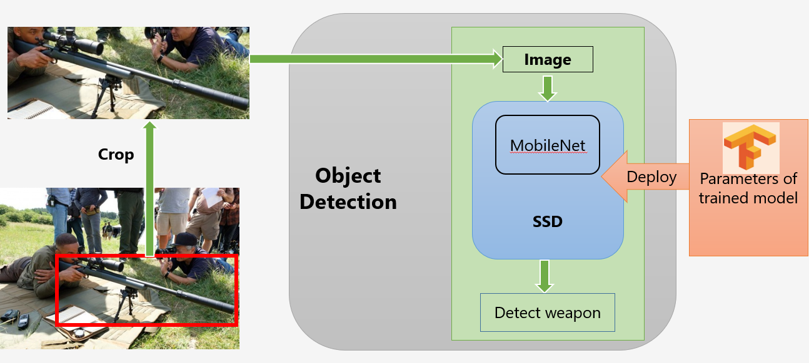
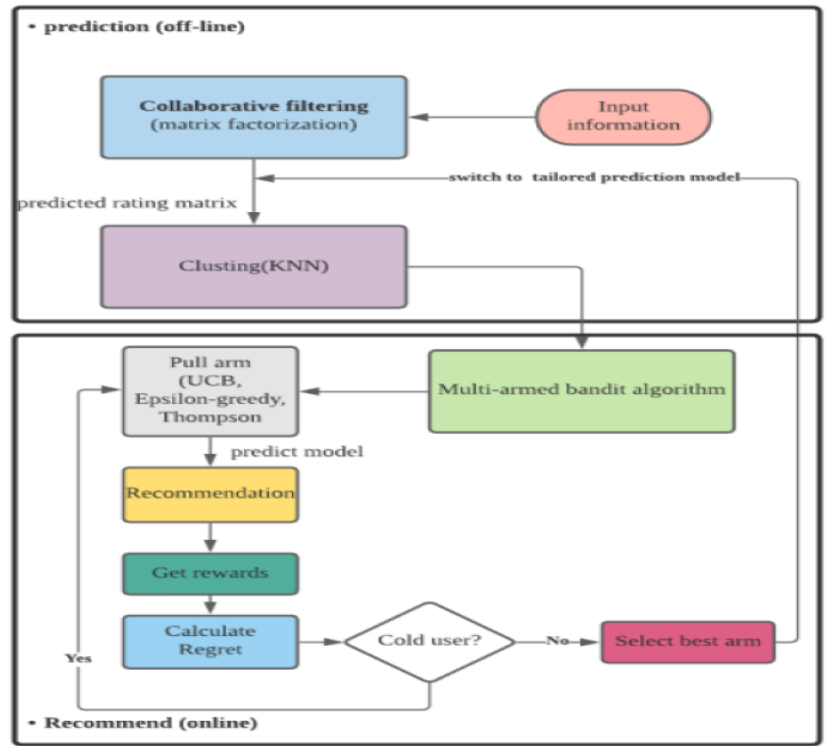

Shenghao XuMaster of Science
Dept. of Computer Science and Engineering |
 |


Biography
Shenghao XU is currently an M.Sc. student in the Department of Computer Science and Engineering, The Chinese University of Hong Kong, supervised by Prof. John C.S. Lui. Previously, He received the B.Sc. (1st hon.) degree from The Open University of Hong Kong in 2020, under the supervision of Dr. Hung Kevin.
His research interest lies in deep learning and online learning (e.g., multi-armed bandits).
News
- [05/2021] Successfully defended master's dissertation. Sincere appreciation to Prof. John C.S. Lui.
- [10/2020] Won the merit award in the Inter-Institutional Competition for Best Facility Management Project Presentation organised by the Hong Kong Chapter of International Facility Management Association. [Link].
- [10/2020] Awarded the entrance scholarship from The Chinese University of Hong Kong.
- [06/2020] Awarded the Katie Shu Sui Pui Charitable Trust Scholarship.
- [04/2020] Awarded the ACEU sponsorship from The Open University of Hong Kong. [Link].
- [02/2020] Paper on automatic detection and recognition of weapons in surveillance video was accepted by ISCAIE'20. [Link].
Publications
|  | Development of an AI-based System for Automatic Detection and Recognition of Weapons in Surveillance Videos. Shenghao XU, Kevin Hung IEEE Symposium on Computer Applications & Industrial Electronics (ISCAIE), 2020. |
Research experience
|  | Multi-armed Bandit problems: Design and Implementation. Supervisor:Prof. John C.S. Lui |
Honors & Awards
-
Merit Award in Inter-Institutional Competition on Facility Management Project by IFMA (Oct. 2020) -
Entrance Scholarship, The Chinese University of Hong Kong (Oct. 2020) -
Dean's List (Aug. 2020) -
The Katie Shu Sui Pui Charitable Trust Scholarship (Jun. 2020) -
Outstanding Student Award (Jun. 2020) -
Dean's List (Jul. 2019)
Experience
YY Inc., Guang Zhou, China
Sightseeing Cable Co., Ltd., Anhui, China
© Runze S.H XU | Last updated: Jun. 13th 2021